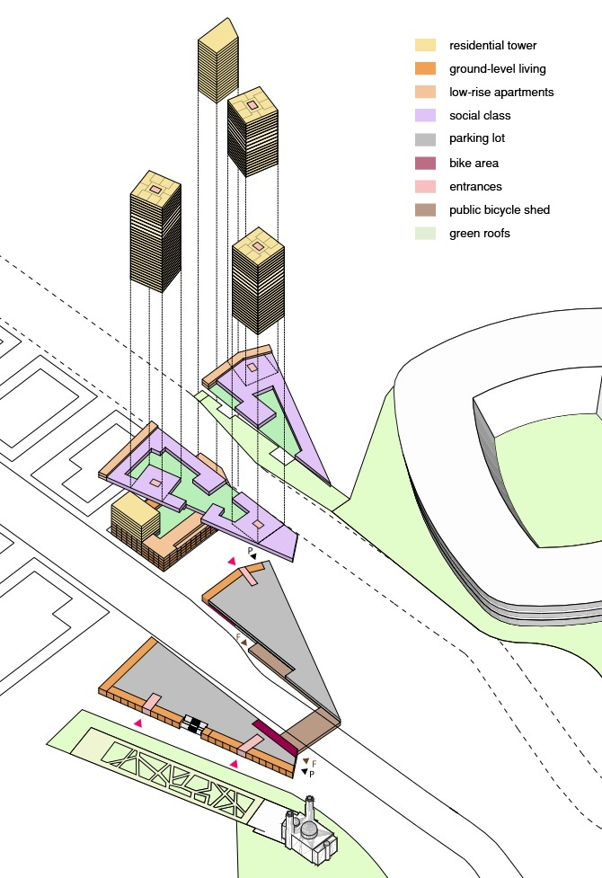

The Flower Towers
Internship: A project developed at Mei Architects and Planners, Rotterdam (NL), 2018
The Flower Towers & The Parc is a large-scale urban development project located at a pivotal intersection within Rotterdam Zuid, where major city strategies—such as Parkstad and Feyenoord City—converge. This intervention envisions the transformation of a fragmented infrastructural zone into a vibrant new residential district.
The project consists of three interconnected plots—Parkstad, Rosestraat, and Mediamarkt—and brings together a mix of mid- and high-rise housing, public spaces, and shared services. The towers, conceived as a new city gateway, stand as symbols of a green, sustainable, and family-oriented urban future.
Our architectural vision interprets the Parkstad plot as a natural extension of the Remisehof/Parkstad development, previously realized by Dura Vermeer and Stevast Baas & Groen. This continuation allows us to complete the final stretch of Laan op Zuid, both in terms of urban fabric and architectural coherence.
The building typology—a compact perimeter block with two vertical accents—is designed to be consistent with the Remisehof volumes, while establishing a visual dialogue with the Flower Towers. we propose a bold new urban gate composed of three slender towers set on a shared plinth. These towers express the identity of a future-forward city: green, inclusive, and human-scaled—the Flower Towers as Rotterdam’s new green threshold.
The design responds to the broader urban context by strengthening connections between neighborhoods, activating public spaces, and integrating the Urban Bridge, which links previously disconnected areas. The project not only provides housing, but also enables new forms of community living by including amenities such as shared mobility options, rooftop gardens, and communal services.
The overall vision embraces synergy, accessibility, and sustainability, aiming to create not just a residential complex, but a dynamic piece of city where daily life, leisure, and mobility coexist seamlessly.
